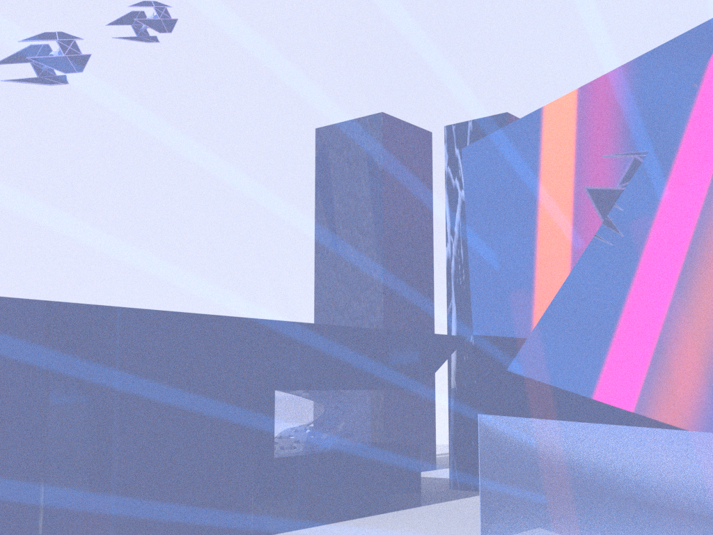
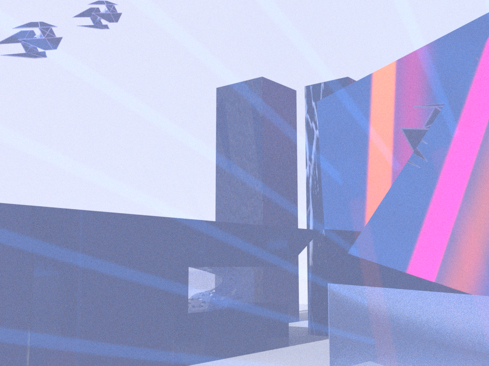
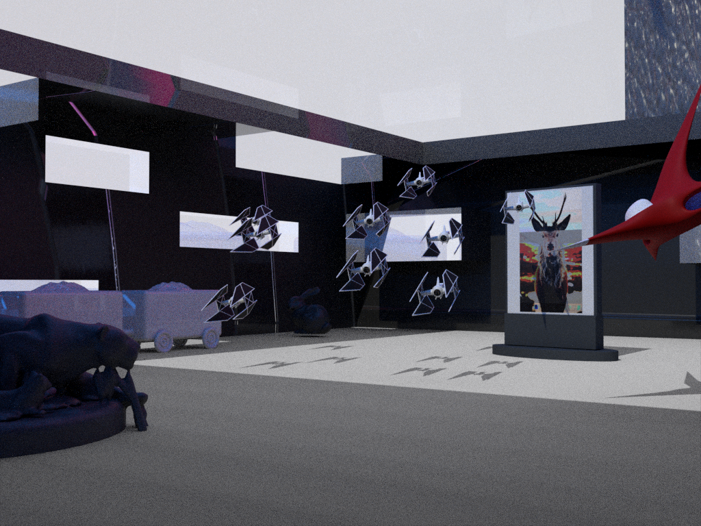
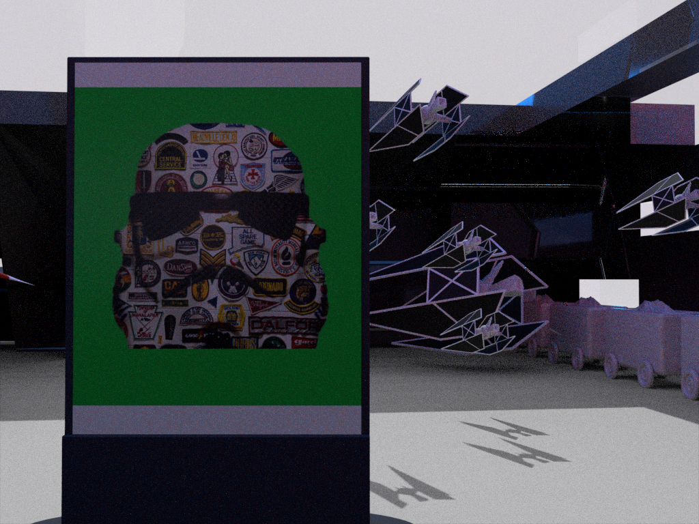
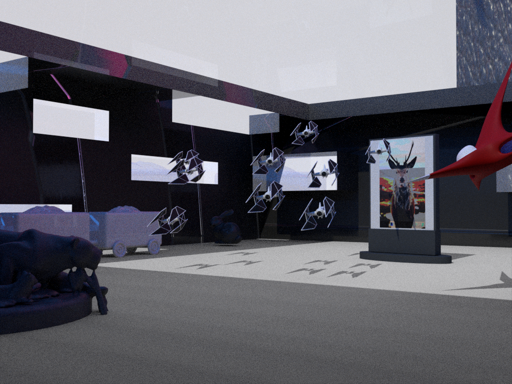
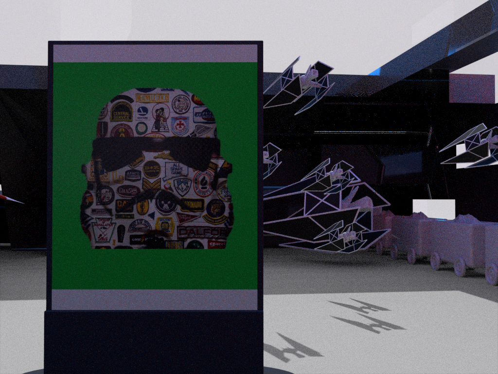

Zhicheng Long
 

 




Virtual Gallery, 2020
The exhibition is based on our memories of the beautiful things we pursued in childhood. Most of the project content it displays are 3D models, mainly to be close to what we remember and imagine in our hearts. The exhibition consists of a translucent hemisphere and the main building. The hemisphere represents a memory carrier, similar to bubble memory, which carries a memory. We want to put childhood memories into this bubble, and inside the bubble, there is a museum where we represent some of our memories of childhood, airplane models, train models, and animal models. These are placed in the museum. For museums, we want those museums with a sense of the future, so a lot of geometric graphs are used to form the exterior of the museum. In order to have a more technological sense, metal and glass are used as materials for the museum's exterior. In terms of mechanical models, we did our best to restore the medieval train and space ships that appeared in Star Wars. They expressed our expectations for the future world. And we believe that the future world will always be built on high-tech development. The animal model represents the relationship between the world and ourselves in childhood. It represents the symbol of bravery and protection of the weak in our youth. And another symbol similar to swan is the representative of integrity.